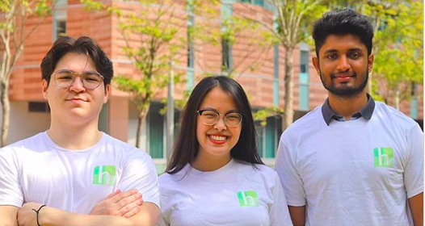

Presenting Hollo, a one-of-a-kind startup, soon to take the mental healthcare industry by storm. Hollo is a deeply motivated synergy between the team’s innovative Artificial Intelligence (AI) based algorithm and an aspiration to revolutionize the mental healthcare industry.
Co-founder and the CEO of Hollo, Cameron Van Breda, believes that though the rising digital age is connecting people with similar passions in its unique way, it is also pulling people apart physically. He shares with us his concern, especially in Asia, for the growing problems in mental health as studies have indicated that it will become one of the leading causes of death by 2030.
Here are a few excerpts of the interview that shine lights on Cameron’s insights about Hollo, his entrepreneurship journey and more:
What is Hollo?
Hollo is a truly unique frontrunner from a technological standpoint. Through offering a digital solution to NGOs and therapists, Hollo utilises artificial intelligence to analyse various behavioral touch points such as emotion, social sentiment, stress analysis and sleep quality by collecting data and feedback through surveys and selfie emotion analysis (analyzing your photo to detect emotion!). By following a multi-factor and objective approach, Hollo can begin to understand and forecast habits, as well as identify which treatments to be implemented and what times should they be effective.
Why the name Hollo?
A lot of thought went into naming Hollo. It was originally derived from a Cantonese phrase ‘syu dung’ (tree-hole), referring to the tree-hollow who listens to everyone’s issues and helps relieve stress. It was an inspiration for the team’s early models as they envisioned themselves becoming this medium. Eventually, “hollo” was converted into “Hollo” to make it quirkier, and so it remained ever since.
What led you to start Hollo? Any stories behind the idea?
Seeing that many of his peers were suffering from various mental health issues and having battled against stress and depression during his sophomore year, Cameron felt that there is a dire need for innovation and change in the mental healthcare industry. With accessible technology at his disposal, he felt inspired and took the initiative to find solutions that could help those in need and challenge the current status quo.
How do you ensure accuracy of diagnosis, say through selfie?
One of the major selling points of Hollo is the use of an algorithm to detect the happiness level through light bouncing off the user’s cheeks via a selfie. To ensure accuracy, Hollo uses a machine learning algorithm, and the team is continuously improving its technology, trying to ameliorate the way the phone registers your face for diagnosis. They are working towards noise reduction, attempting to label it in a superior way that eliminates anomalies in data recordings to improve accuracy over time.
Hollo is also collecting data and feedback through training with NGO and professionals – they compare data, assess matching records, and after a certain period of calibration, the algorithm eventually amends errors.
How will Hollo plan to sustain revenue and create value for partnering NGOs?
Currently, Hollo’s primary source of revenue is a B2B model with NGOs by providing their software for an annual fee. This provides excellent opportunities for NGOs to expand their services and open doors for various funding applications, especially for government support. This ensures that all partnerships are mutually beneficial.
In the pipeline, Hollo plans to scale internationally. But for the foreseeable future, Hollo plans to partner with more local and international practitioners and mindfulness programme directors to provide informative online courses in multiple languages.
What was the primary challenge you faced while creating Hollo? Do you have any advice for aspiring entrepreneurs?
Cameron faced many reality checks and criticism at the beginning of their startup journey, especially from judges regarding their business model during their initial competitions. He believes that what’s important is to be able accept these criticisms and use them to better his idea. One should try to understand that people are not really targeting you but the idea. Founders of start-ups should incorporate these criticisms so that their ideas can become sustainable and robust.
Cameron shared that as a Biology-major student, the ability to network was something that he had to learn when immersing himself in the business world. Pitching was also a self-taught skill that he had to pick up along the way. He also advised aspiring entrepreneurs to be open to constructive criticisms.
Finally, what is one message that Hollo would like to share with its users?
Cameron believes that being responsible for your mental health is important and that there is nothing wrong with wanting to seek help. He wants his users to know that this is an issue that they can seek help for. Hollo aims towards normalising the stigma that exists in our society in regards to mental health.
Before you go...
It was truly heartening to meet such an inspiring person who used his experiences and obstacles to work towards bringing a change in the society. To know more about their journey, follow them on instagram at hollo.hk. Further, to learn more about amazing startups like Hollo, follow ESo on instagram at eso_hku.